IT-Drift brukerveiledning Oppsett av AD
Her kan du legge inn steg-for-steg guider, med bilder og forklaringer.
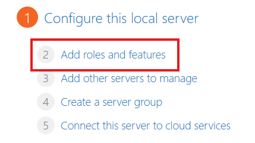
Steg 1 – Add roles and features
Klikk på "Add roles and features" i Server Manager. Dette åpner veiviseren hvor du kan legge til nye roller, som Active Directory Domain Services.
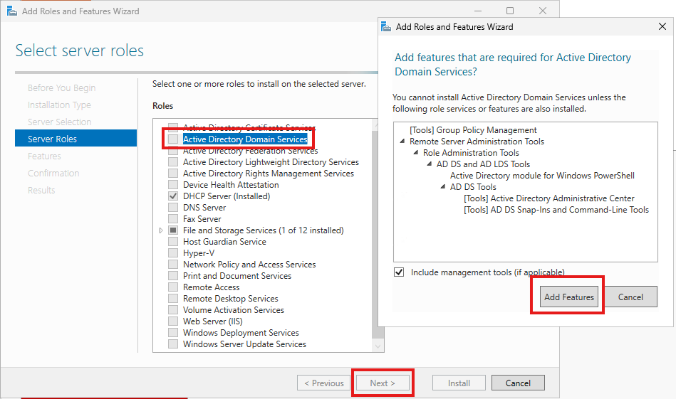
Steg 2 – Active Directory Domain Services
Huk av "Active Directory Domain Services" (AD DS). Når vinduet med ekstra info dukker opp, klikker du "Add Features" og deretter "Next".
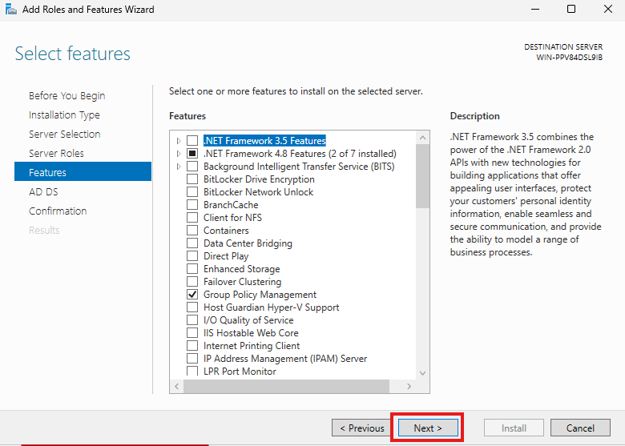
Steg 3 – Fortsett i veiviseren
Se gjennom informasjonen i sammendraget. Pass på at ingenting uventet er valgt. Klikk deretter "Next" for å gå videre.
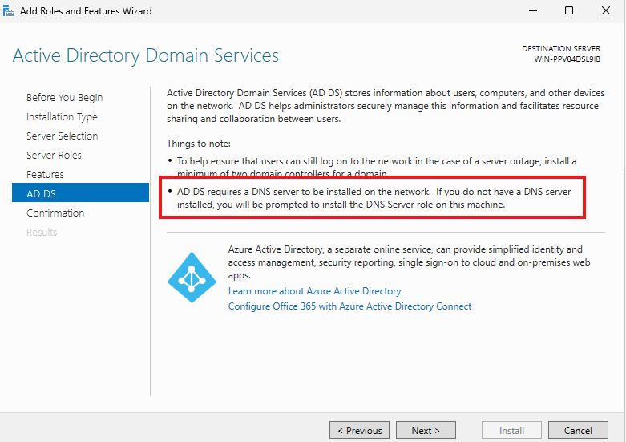
Steg 4 – Bekreft installasjon
På installasjonssiden skal du bare kontrollere at AD DS fortsatt er valgt. Klikk "Next"
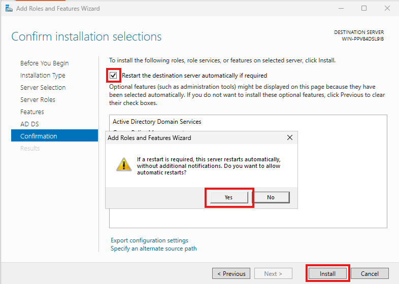
Steg 5 – Promote this server to a domain controller
Huk av "Restart the destination server atuomatically if requierd", Deretter klikk Yes, også klikker du på install.
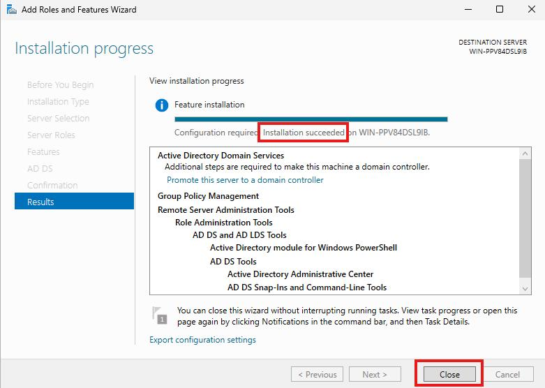
Steg 6 – Legg til nytt domene
Følg med og pass på at det står "Installation succeeded"
Deretter klikk "Close"
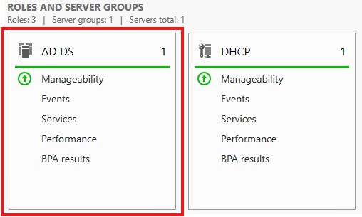
Steg 7 – Domain Controller Options
Når AD DS og DHCP-rollene vises som grønne, betyr det at de fungerer som de skal. Du skal bare kontrollere at alt er i orden – ingen feil eller varsler.
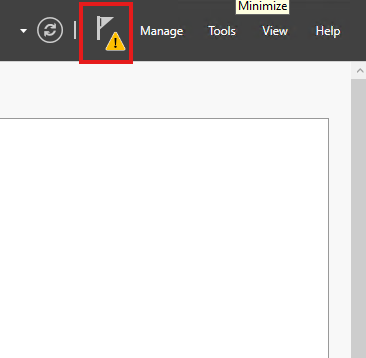
Steg 8 – Varsling
Hvis du har dette varseltegnet på flagget. Trykk på flagget.
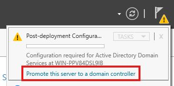
Steg 9 – Promote this server to a domain controller
Varslingen vil dukke opp. trykk på "Promote tihs server to a domain controller"
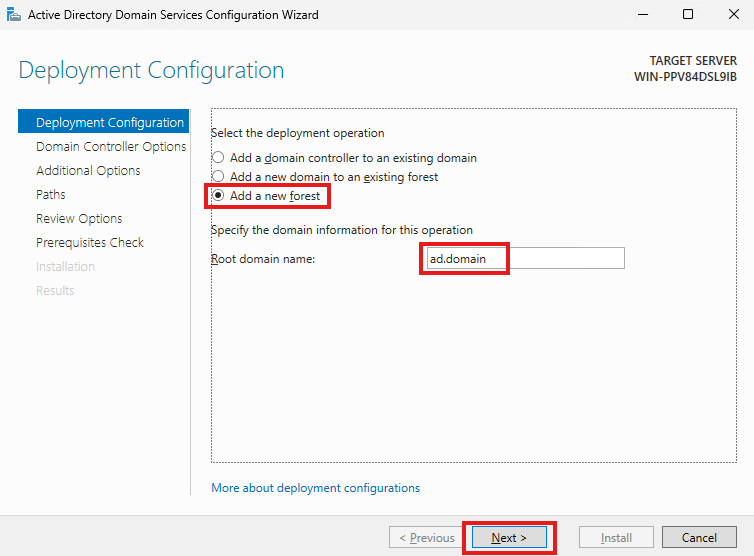
Steg 10 – Deployment configuration
Denne siden vil åpne seg. huk av "Add a new forest". Kall den for "ad.domain", deretter klikekr du next
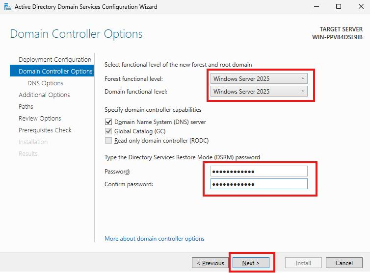
Steg 11 – Domain controller options
Pass på at forest functional level og Domain functional level er begge sotte til "Windows Server 2025".
Deretter må du skrive inn ett passord, det bør du notere ned for å være helt sikker.
Deretter klikker du på "Next".
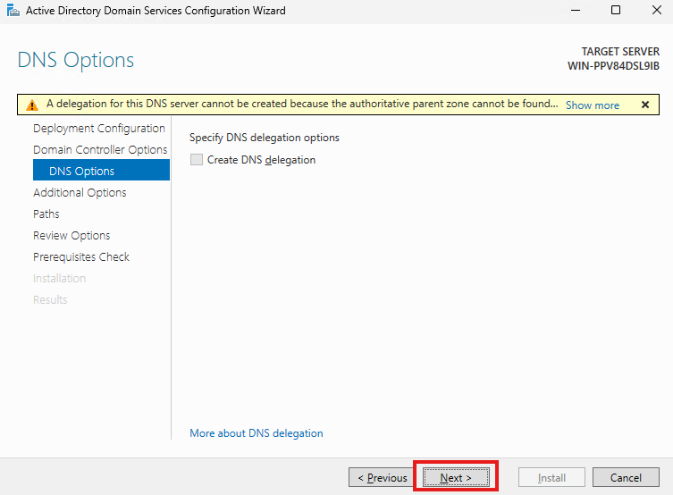
Steg 12 – DNS Options
Klikk "Next" for å gå videre.
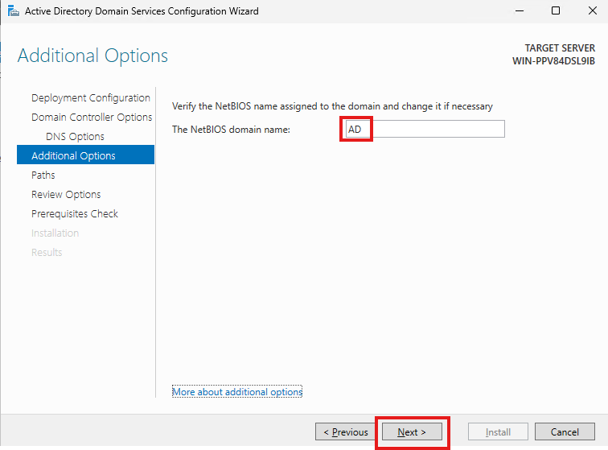
Steg 13 – Additional Options
Skriv inn navnet "AD" derette klikker du "Next".
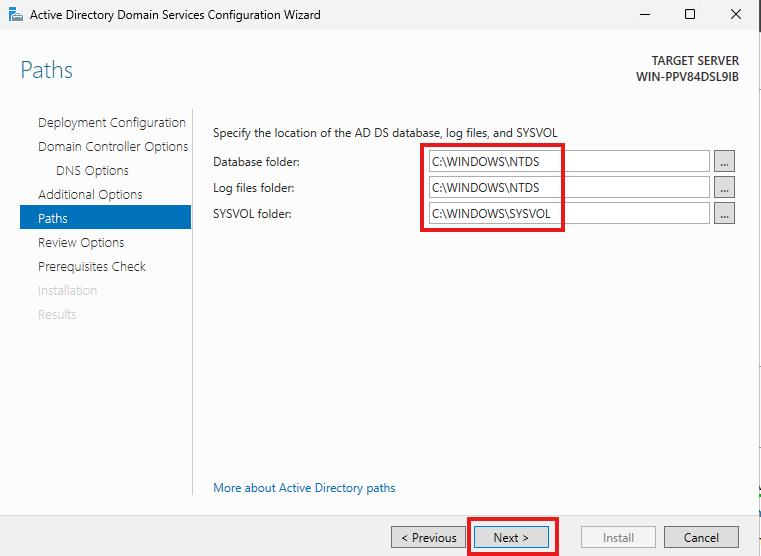
Steg 14 – Paths
Sett alle valgene til å matche valgene på skjermen. Pass på at alt stemmer deretter klikk "Next".
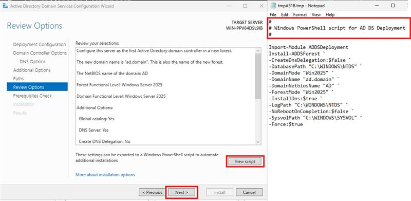
Steg 15 – Review options
Klikk på "View Script"
Deretter pass på at det står "Windows PowerShell script for AD DS Deployment"
Hvis det stemmer kan du klikke "Next".
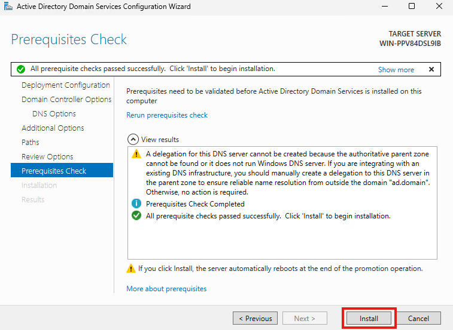
Steg 16 – Perequisites Check
Klikk "Install"
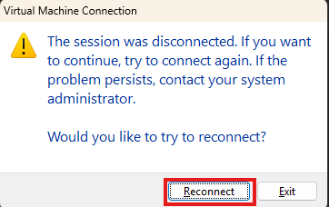
Steg 17 – Reconnect
Du vil få opp en boks på skjermen
Klikk "Reconnect".
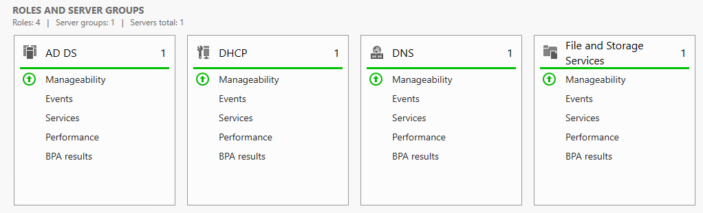
Steg 18 – Lyser Grønnt
Pass på at alle lyser grønt.